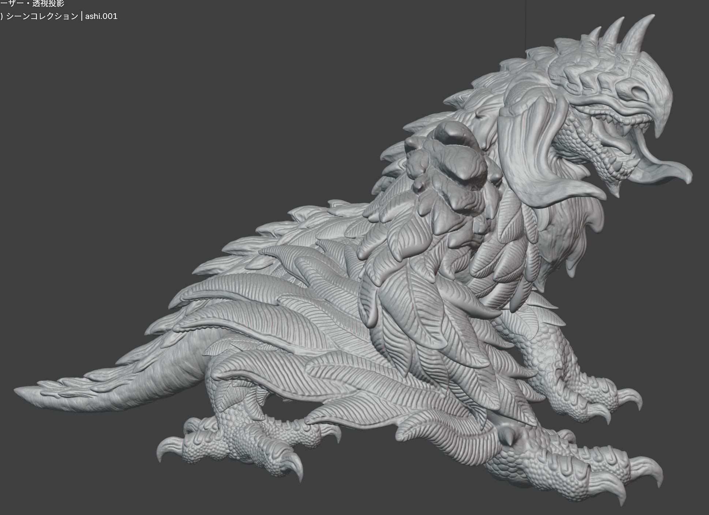
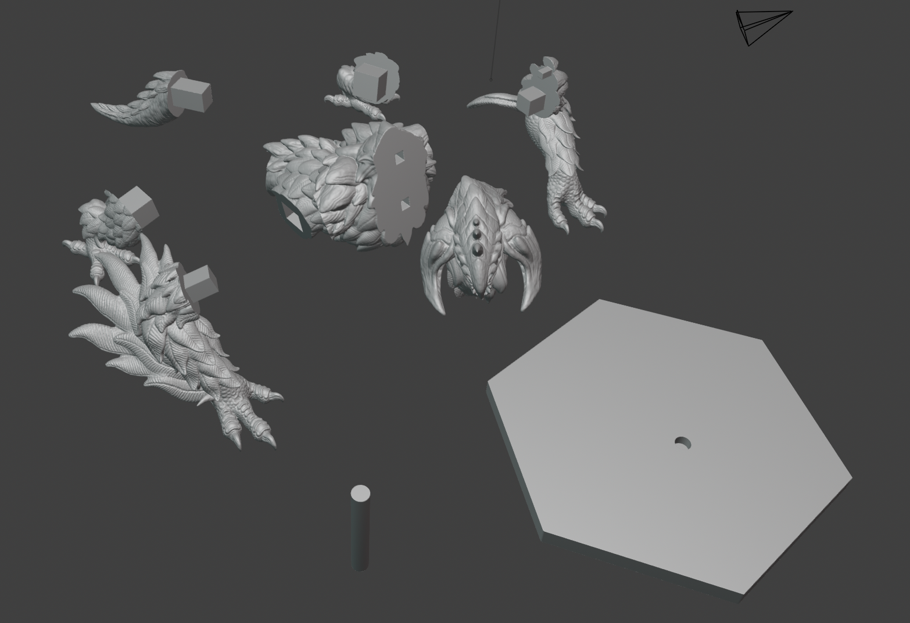
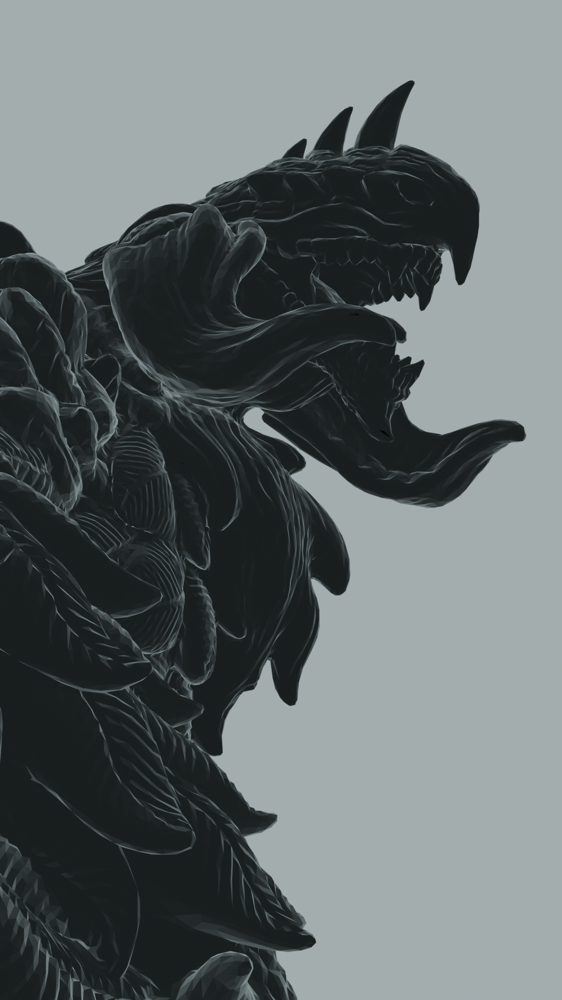

「 鳥竜のデザイン / Design of Bird Wyvern 」
デザインコンセプト
最初に鳥をモチーフとしたクリーチャーを作ろうと決めた時に、"盲目の鳥竜"を
コンセプトとしようと真っ先に決めた。
盲目でありながらも、力強く地に根付く強靭な生物を表現しようと考え、このコンセプトに至った。
そして、竜であるため爬虫類と鳥類を組み合わせたようなデザインにしようと思い、
基本は猛禽類のような大型の鳥の形状をベースにし、その節々に爬虫類ののような特徴が見られる
デザインに仕上げた。

造形からデザインへ
近日更新予定・・・
「 鳥竜の造形 / Bird Wyvern Sculpture 」
スカルプト造形
デザインした鳥竜を造形をする上で、甲殻や羽の表現にはとてもこだわったと同時にとても難儀した。
特に毛や羽の部分はそのままの形状や質感を、造形で完全に再現することはできないので表現を工夫した。
具体的には、羽は大まかな形状を作った後にディテールを掘り込むことで、羽の質感を表現した。
翼や首元の毛の造形も同様の方法で行なった。

全身の造形をblenderのスカルプト機能を用いて行なった後、3Dプリンターで出力するために
出力する用のデータ作りを行なった。その際に一度の全身を出力するわけにはいかない。
そのため、以下のような形にパーツ分割をブーリアンなどの機能を使用し、行なった。
頭部・胴体・左右前脚・左右後脚・尻尾・支柱・台座の９つのパーツに分割した。

出力品（光造形）
スライスソフトのchituboxを使用し、印刷データを作成後に実際に光造形3Dプリンターで印刷を行なった。
今回は、水洗い可能のABSライクレジン（グレイ）を使用して出力した。
そこから乾燥させ、二次硬化を行い、仮組みを行い以下のようになった。


＜サイズ＞
・横：約 １００ (mm)
・高さ：約 ８０ (mm)
・奥行き：約 １１０ (mm)
反省としては、サポートをつける位置などはもう少し気をつけるべきだと感じた。
サポートのつける位置によっては、本体に傷ができてしまうケースもあったので、注意していきたい。
そして、データを作るにあたりリメッシュを重ねたことで造形が全体的にぼやけてしまったので、
全体的にリメッシュするときは慎重に行いたい。
おまけ
せっかくなので、造形したモデルを使ってレンダリングしてみました。
個展などの展示会にあるようなポスターをイメージして制作してみました。
画像は自由にダウンロード・保存して、閲覧できるのでぜひ見てみてください。

ホームへ戻る